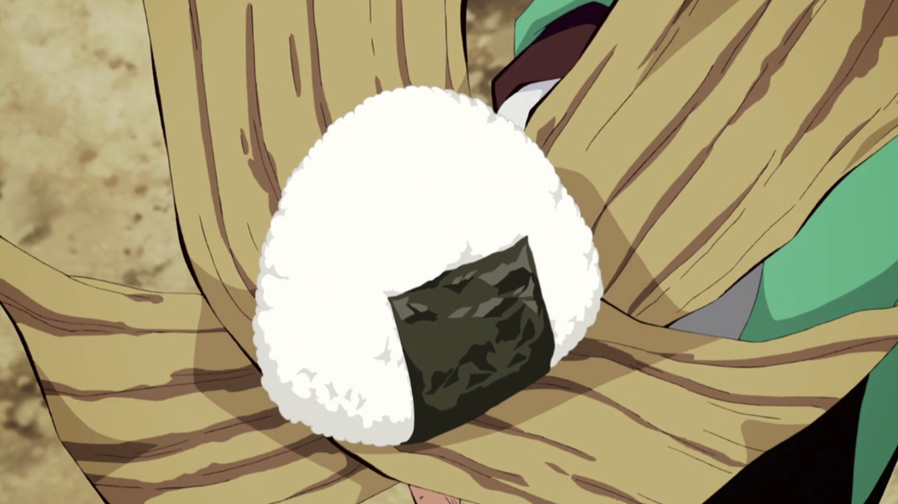

Onigiri (Rice Balls)

Onigiri, also known as omusubi, are a quintessential Japanese comfort food. They are triangular or cylindrical rice balls made from steamed white rice and often wrapped in a sheet of nori (seaweed). Onigiri can be plain or filled with various savory or sour ingredients to enhance flavor. Popular fillings include salted salmon, pickled plum (umeboshi), tuna with mayonnaise, or seasoned kombu (seaweed).
These portable snacks are not only delicious but also practical, making them a staple in bento boxes, convenience stores, and picnics. Onigiri’s simplicity and versatility have made it a beloved food for generations in Japan and beyond.
Ingredients:
- 3.5 oz. sushi rice
- 1 tsp salt
- ½ cup scant water
- 2 tbsp canned tuna drained
- 1 tbsp Japanese Mayo
- 1 ½ tsp sesame seeds toasted
- Nori strips
Directions:
- Wash the rice very well under cold water. Make sure the water comes out transparent at the end of the wash.
- Put the rice in a large bowl and soak it for 30 minutes.
- After the 30 minutes have passed, drain the rice and put it in a pot. Add the water and salt (if you will be using a mould to shape your onigiri) to it. Cover it with a tight lid and put it on a high flame until it starts to boil, then simmer it on low for 10 to 12 minutes or until all the water has been absorbed.
- When ready, let it rest for 10 minutes BEFORE removing the lid.
- Add the toasted sesame seeds and mix well.
- To make the filling, simply mix together the tuna and mayo.
- Let the cooked rice cool a little bit until you can hold it without burning your hands. However, do not let the rice cool down completely or it will harden.
- To shape the onigiri by hand, wet both your hands with water in order to keep the rice from sticking to your hands.
- Then put some salt on your hands and rub it to spread all around.
- Scoop out a handful of warm rice (about ½ cup) into one hand. Using the other hand, make an indentation in the rice and put half of the filling inside. Press the filling into the rice.
- Then use your hands to mold and press the rice around the filling to gently form the rice into a triangle. Shape the bottom with your left hand and the top corner with your right hand. I use three fingers (thumb, index finger, middle finger) to cover the area to make a nice triangle shape. Pressing the triangle into the palm of your left hand, squeeze each corner of the triangle with your right hand. Your hands should be just firm enough so the onigiri doesn't fall apart. You don't want to squeeze the rice too tight.
- If you have an onigiri mould, simply fill it half-way through with rice, add the filling in the middle, cover with some more rice and press down to shape. In this case, add 1 tsp of salt to the rice while cooking it.
- Before you serve it, wrap the onigiri with nori (seaweed).
- Serve immediately or wrap with plastic wrap.
Home